Histories of Saltmarsh Region
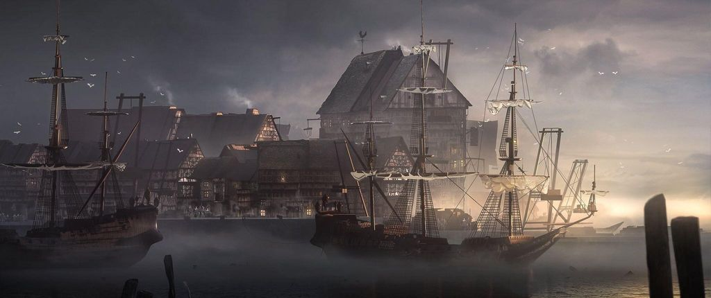
Village of Saltmarsh
Nestled on the coast of the Azure Sea is Saltmarsh, a sleepy fishing village that sits on the precipice of destruction.
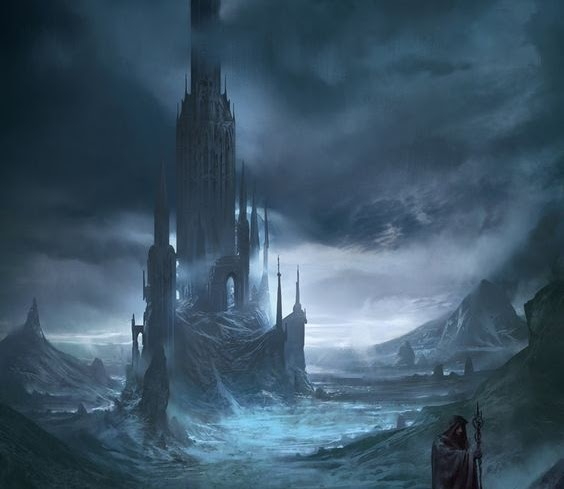
Tower of Zenopus
At the eastern reach of the Hool Marshes the Tower of Zenopus rises above the perpetual thick fog covering the town of Leej at its base.
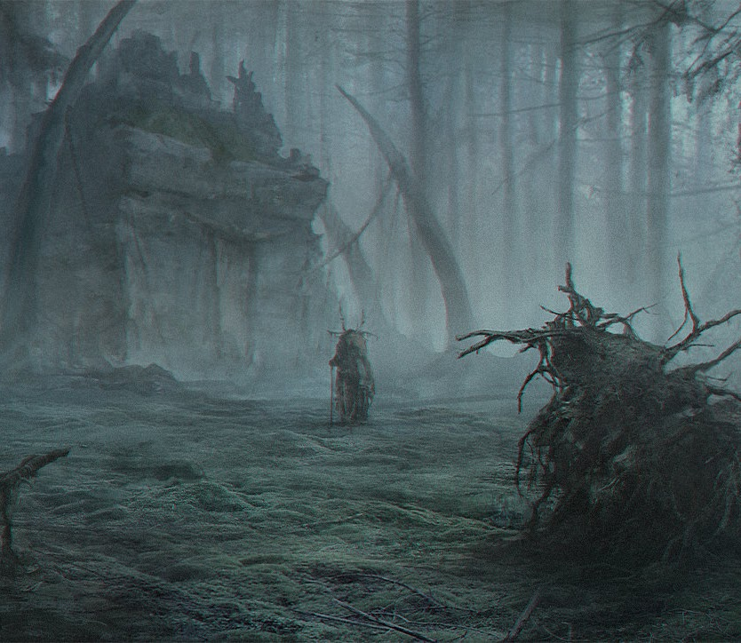
Drowned Forest
Today, the Drowned Forest is perhaps the most dangerous location in the region. The trees remain standing, but they long ago lost their foliage and are little more than dead, rotting timbers projecting out of the mud. Mushrooms and other fungi sprout everywhere.
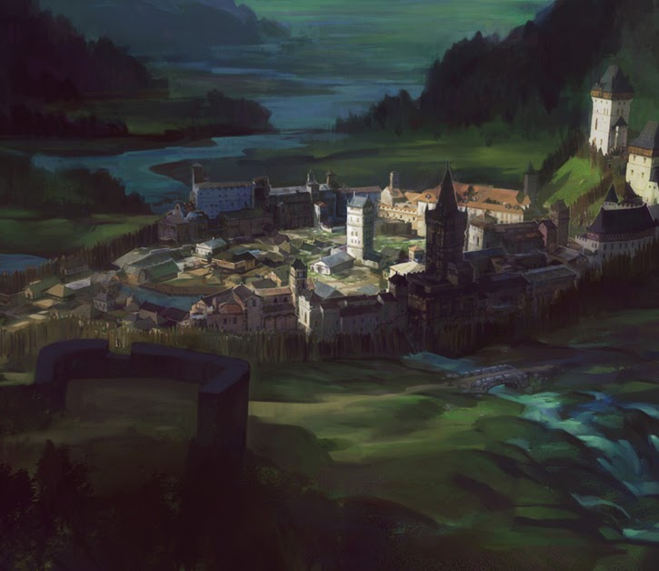
Burl & Silverwood
Fortified outpost in along Silver river and surrounded by Silverwood. Knights and rangers here are tasked with guarding the Dreadwood.
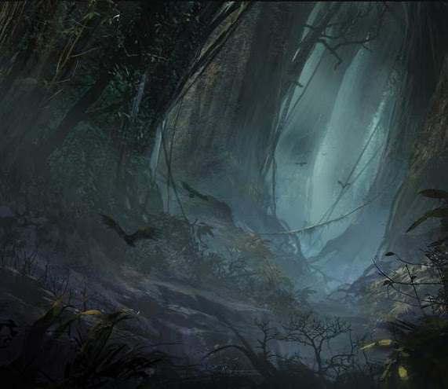
Dreadwood
Long a home of horrid monsters and vicious raiders, the Dreadwood hides within its borders a multitude of terrors. Keoland maintains ranger patrols that sweep through the outer reaches of the forest periodically, while several wood elf clans dwell at its edge. The two forces are generally successful at keeping the monsters of the Dreadwood in check, but at times a threat that avoids them or overcomes them emerges to wreak havoc across the land.
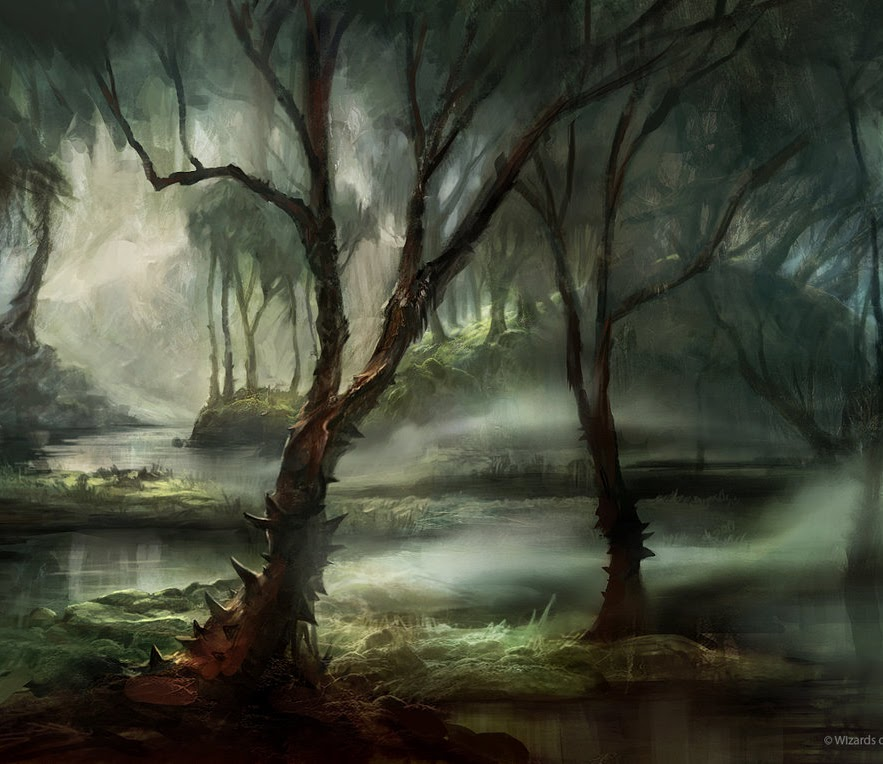
Hool Marshes
Natural border between Southern Keoland and the Hold of the Sea Princes. Its wild land is known for lawlessness swallowing armies.
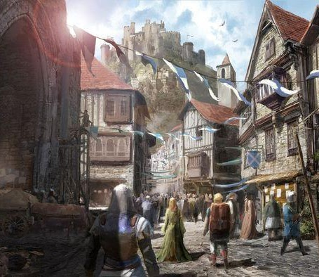
Seaton
Former trade town, Seaton is now being fortified. Most of its trade has moved to Saltmarsh or disappeared entirely.
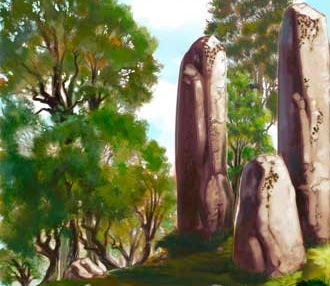
Standing Stones
Two enormous runestones stand on this island. In ages past, a siren was chained to the stones here and sacrificed by an evil human tribe as an offering to the sea. Since then, the fishing in the region has flourished..
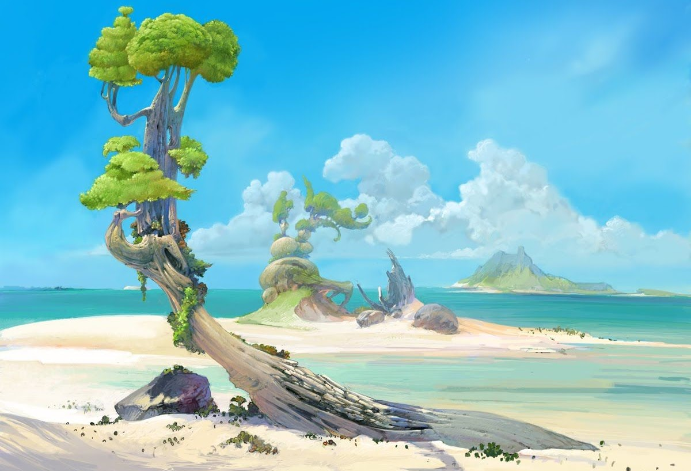
Abbey Isle
Small island with an Abbey off the near Saltmarsh of interest to the council.
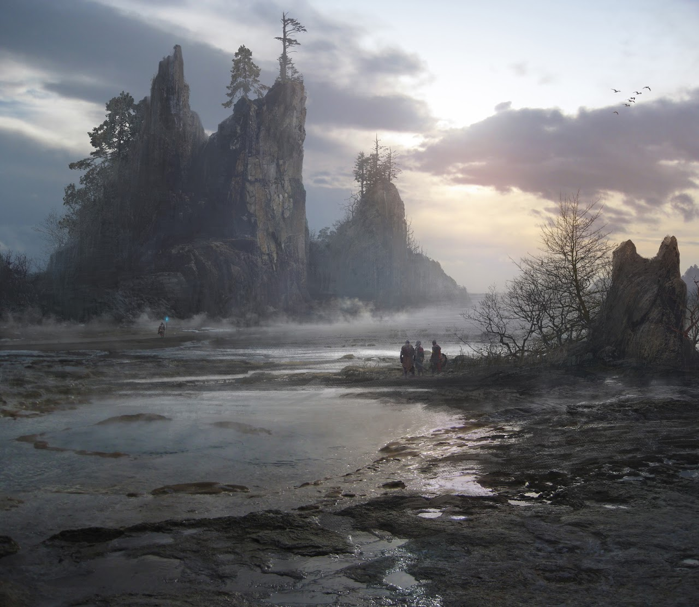
Hold of the Sea Princes
Kingdom to the South of Keoland, separated by the Hool Marshes and the sea. Former province of Keoland that broke away some time ago. The former King of Keoland (Tavish III) was killed at Westkeep around 120 years ago, attempting to take the Hold back and avenge his younger brother who was kidnapped.
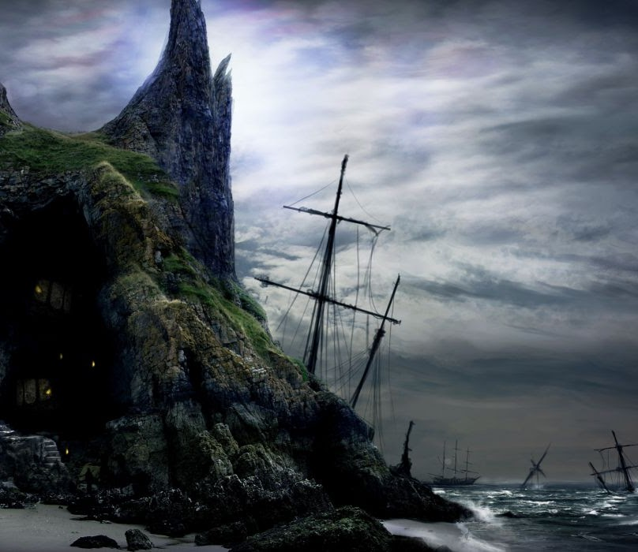
Carrion Archipelago
A series of small and medium sized islands with lots of shallows. Mostly unexplored, larger trade-ships tend to avoid the area. Forms the sea border between Keoland and the Hold.
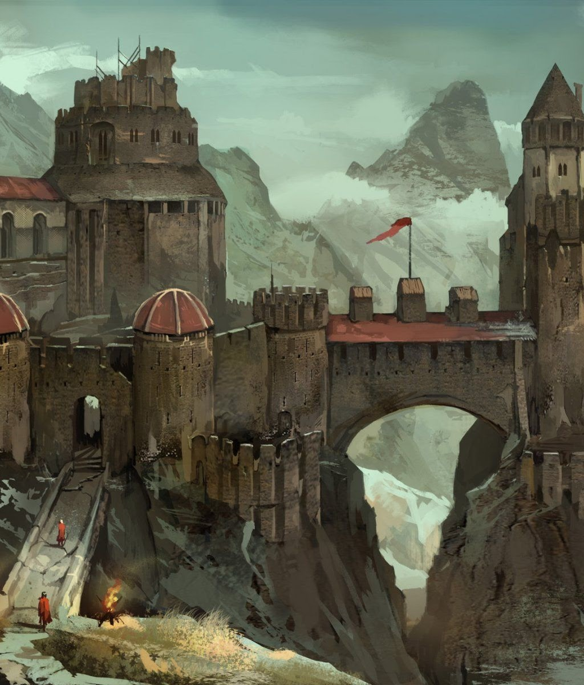
Gran March
Former Northern vassal state of Keoland, Gran March was established by the knightly order: Knights of the March. Historically a militant area that helped defend and extend the control of Keoland Northward now serves as a strategic nation in between two major powers: Keoland and Furyondy.
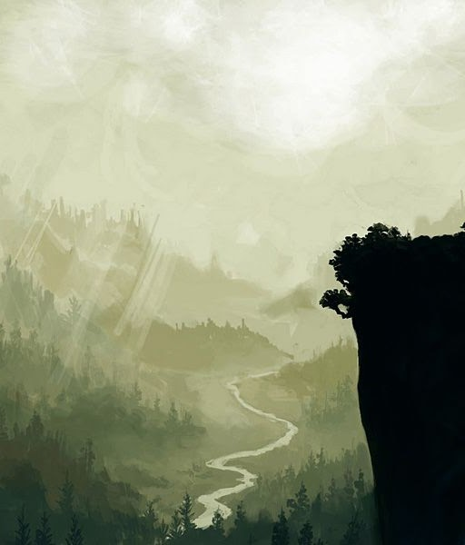
Yeomanry
Nestled in the foothills of the Crystal Mist Mountains to the South West of Keoland, the Yeomanry, tired of losses of its people in the Keolish wars, declared its independence from Keoland around 100 years ago following Keoland's Wealsun proclamation, effectively manifest destiny over the Sheldomar Valley. This move was influential and led to other former provinces asserting their displeasure with Keoland. Outside the capital of Loftwick, most lands are rural. There is a relatively large dwarven presence in the little hills.
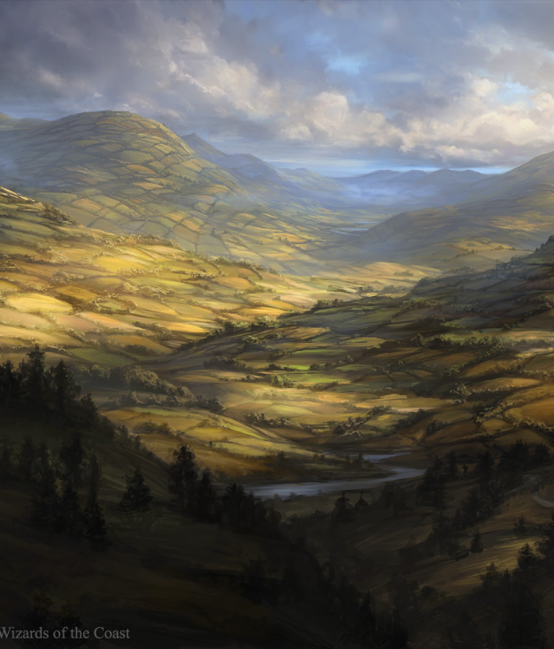
Sterich and Geoff
The north western neighbors of Keoland, both have significant wild areas along their western borders with the Crystalmyst mountains at their back.
Sterich is a source of mineral wealth and operates semi-autonomously of Keoland.
The Grand Duchy of Geoff trades fur, wool, gold, silver, timber and gemstones.
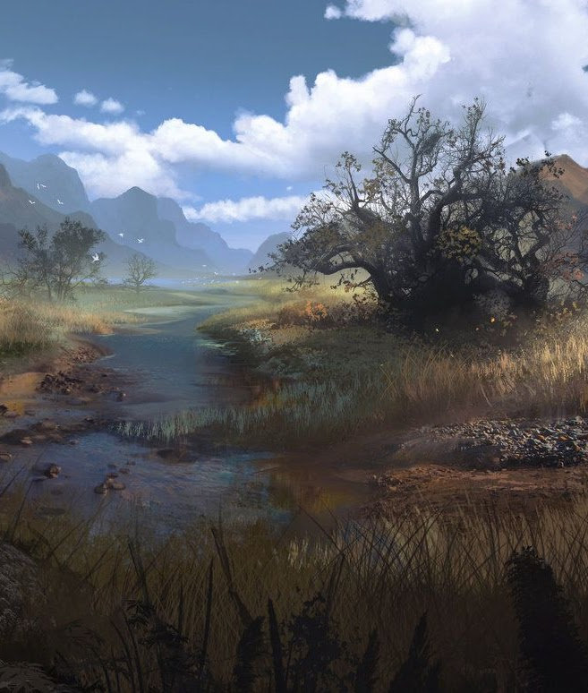
Ulek States
The Ulek states sit at the Eastern edges of the Sheldomar valley nestled up to the Lortmil mountains. They have have a defensive alliance with each other after they peacefully declared independence from Keoland nearly 90 years ago. They are active traders and economically thriving.
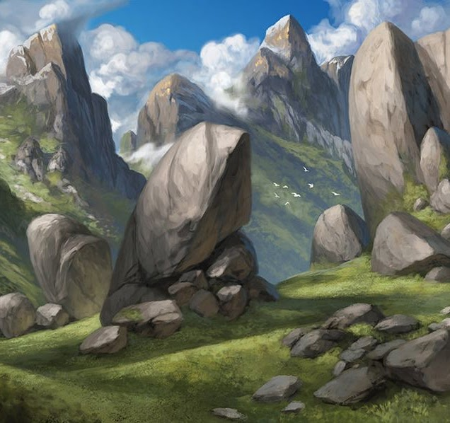
The Pomarj
Former province of Keoland it was long administered by the Ulek Principality. It declared its independence after the end Keoland's expansionist period and Ulek's own severing of ties, ejecting the Dwarven Garrisons. It has vast mineral wealth and is ruled by a number of nobles. Following the Hateful wars in which the Ulek States and Celene assaulted non-human species in the mountains and forests, Pomarj became a backwater filled with the retreating goblins, orcs, and other races.
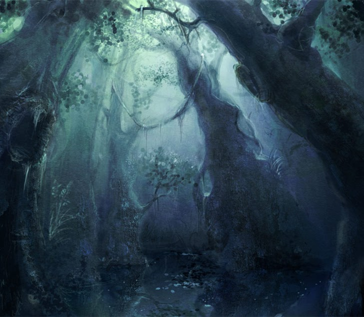
Celene
A prominent elven nation East of the Lortmil Mountains. Celene once allowed Keoland to man watchtowers in the territory, but expelled them after becoming wary of Keoland expansionist policy.
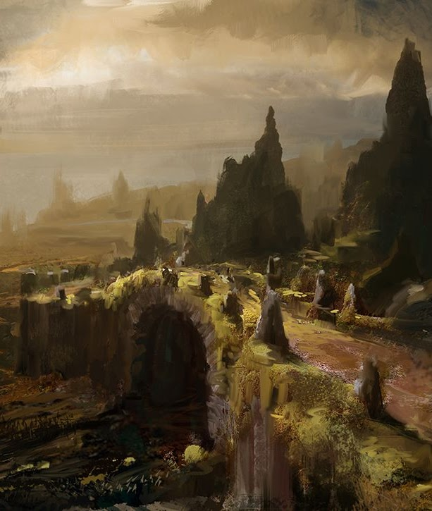
Domain of Iuz
Located far to the North, the Domain of Iuz is at war with Keoland's enemies (Kingdom of Furyondy). Keoland supplies primarily foodstuffs to the domain with Xendros being the lead of the trade delegation. The northern barbarian tribes worship him at war with the neighbors. Iuz is a demi-god, also known as Old Wicked and Lord of Pain.
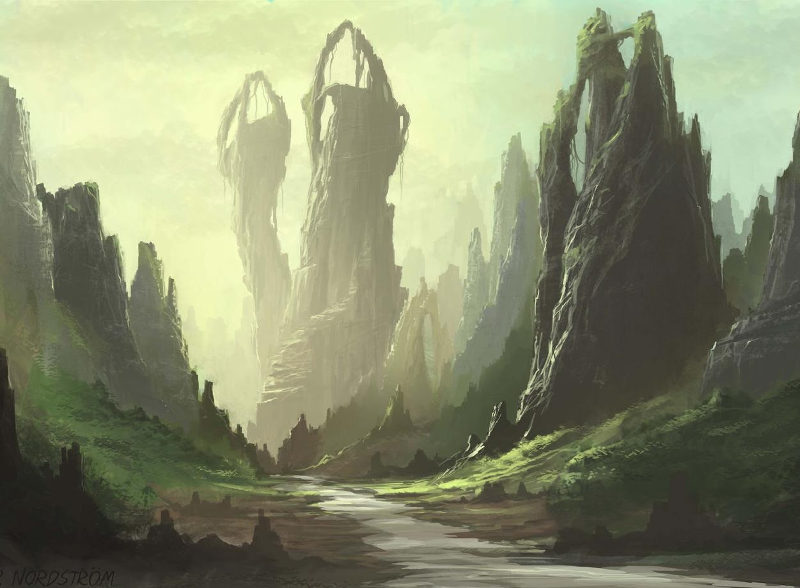
Wild Coast
A collection of city-states known for commerce, chaos and savagery. Barbarian warlords, trade commissars, and petty nobles rule these lands where freedom is.
Village of Saltmarsh
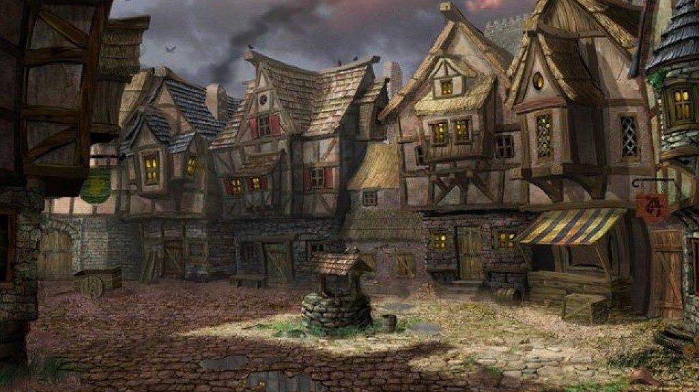
- Town council is torn between supporting growth and expansion, as desired by King Skotti and maintaining the old ways (and avoiding the expansion).
- Before taking the smuggler's ship, the workers at the fishmonger's district were struck blind (24 hours) over a period of a week. A strong version of the poison "Malice" was determined by Seja. No one was arrested for this, though the locals blamed the dwarves for uncovering something in their mines. A street fight was narrowly avoided by Urgor's intervention
- Mud Mephits were stealing fish from Saltmarsh in the night. Seja investigated and found them to be spawning from a portal at Warthalkeel ruins.
- Xendros is searching for a "Apparatus of Kwalish" and will pay for information or the item itself.
- Darcaym vanished under mysterious circumstances -- followed shortly thereafter by the murder of the prison Bloody Bjorn. He's now suspected in Saltmarsh and wanted for murder. He was last seen headed North to Burle and/or Niole Dra and mentioned Kiara Shadowbreaker.
- The council has agreed with the party that the ship could be theirs if they would be somewhat of a military naval presence for the city. Gellan has a side deal with the party to run a trading business.
Tower of Zenopus
- Darcaym was found here, left for dead, and saved by Belizar. Kell, an associate of Gellan, had requested to do a deal at the tower where he gave dead bodies to a band of Goblins thought to be connected to Keledek the Unspoken.
- It is expected that Undead are here.
- Keledek has advised extreme caution at the Tower and noted that he's hired other adventurers who have never returned. Mejdrich seems uncomfortable talking about the Tower and Keledek's interests there.
Drowned Forest
- Known to have crossings to Shadowfell. These seem to have grown more common due to the desperate and hopeless state of the forest.
- Ingo remembered that it was the Elves that diverted the Silver river out of the forest.
- Battle of Sheldomar Valley occured over a hundred years ago between crown forces, infernal forces ("The Shard") and non-aligned forces from Dreadwood.
- A Goliath champion to Mephistopheles, Arkon, led the Shard.
- Two commanders "Horncarver" and "The Drover" escaped capture. Ingo Drover has settled in Saltmarsh and has an unnaturally long life. He feels responsible for past wrongs.
- It was rumored (Mejdrich) that "some of" the remains of the Goliath Champion were taken to Leej/Tower of Zenopus
Burl & Silverwood
- Burle has formed an alliance (Wildflame pact) with the wood elves of Silverwood for defense.
- Recently Dreadwood incursions have increased
- Nobles on North and Eastern Fringes have been attacked recently.
- Infernal Incursions in the Kingdom of Keoland
- Halfings from Heatherholm hills have reported strange occurrences. Some have gone missing into the forest and others have been having nightmares involving Seja.
Dreadwood
- Forest has been expanding slowly (from: Ivar)
- Was previously a place with many Fey Crossings and Fey creatures were relatively often seen here, now, a fair creatures are gone. Several Moon druids may be here (from: Ivar)
- Nightshade is an evil entity in Dreadwood (from: Caravan Investigation)
- Ghouls, Undead, Dire Wolves, and Bandits here.
- A Fey foe killed Sir Rudolff of Burle with illusions and necromancy.
Hool Marshes
- The Ironhide lizardfolk tribe is forming an alliance with sea-folk in the area to clear out the Sahuagin threat that menaces the region.
- The Sahaugin have taken over the former lizardfolk home.
- A raid on Saltmarsh caught it unprepared -- around 50 were killed along with some guards and marines. Many were taken into the sea by the retreating Sahaugin.
Seaton
- Gerard lives here and has offered lodgings for the party should they visit.
- The guards are known to be skeptical to adventurers.
- Duke Marik Feldron rules over the town and is thought to be extremely loyal to King Skotti.
Standing Stones
- The three large Standing Stones at the edge of town apparently bring luck to the fishing in Saltmarsh.
- There are runes around them in two different exotic languages (Abyssal and Ancient Sueloise).
- In a dream-state Seja visited the stones. A thick whispy cable of white light terminated at stone. Each cable went high in the sky and off in different directions. A 20' disc of the same white light glowed in between the stones. Outside this dream it cannot be seen.
AbbeyIsle
- Historically owned by evil clerics associated with the Undead. Crown & Saltmarsh have always avoided it.
- Recently the mariner's guild has noted that the Abbey appears to be sacked -- the council thinks this could be a good opportunity to secure the island. It needs help clearing it.
- The Council also could use it for commerce, fishing, and mining (Manistrad says her Clan thinks there are some big gems :).
Hold of the Sea Princes
- Source of piracy, smuggling, and slave trading.
- Open talk of war with Keoland and the Sea Princes -- Seaton is militarizing.
- Sea Princes are known to have a formidable navy.
- Political structure is thought to be several warlords who cooperate with each other.
Carrion Archipelagoh
- Wreck of the Crescent (Gellan's tradeship) is here. A Blue Dragon tried to capture the vessel.
- The dragon has been identified as Khmaz the Traveler, who traveled from the Dry Steppes to the islands. Ivar warned the council about this years ago.
Arkon's Infernal Contract
This contract binds the envoys of Mephistopheles (“The Envoy”), and recipient (“The Ward”) into an infernal contract for an unending period of time, or this contract is voided by an agreement on the part of both parties. Upon agreeing to and signing this contract, The Ward is bound to their agreed obligations and parameters within the first pact, as is The Envoy. The Ward agrees to the following terms and conditions as laid down in this contract, understanding unequivocally that this contract is binding and its conditions will last in perpetuity in all planes of reality. Upon completion of the agreed obligations and parameters on both sides of the initial pact, the first pact is considered complete and concluded.
Specifics of the contract are hereby enumerated in full and self-sufficient for arbitration according to the original pact and contract. Insofar as further contractual arrangements are made, addendums are attached to this general contract and subject to its general terms unless expressly specified and in the addendum stipulations. Such addendums must be signed or initialed and, after doing so, the contract becomes enforceable immediately and into perpetuity. A provision for escalation, the Second Pact, can be triggered by The Ward anytime after signing of this contract and can be made by verbal acceptance to The Envoy.
Any violation of this contract on the part of The Envoy immediately holds this contract null and void, requiring a penalty payment of 15,000 gold pieces to The Ward to be paid immediately. Any violation of this contract on the part of The Ward immediately locks the claim and ownership of the everlasting soul of The Ward, invoking the laws of the pact primeval, under the control and dominance of The Envoy for all of eternity, sending the soul of The Ward immediately upon death to The Envoy to do with as they see fit.
In the unlikely event that The Ward is killed while on any layer of the Nine Hells ownership of this contract transfers immediately to Mephistopheles himself, thusly, death of The Ward, either permanent or non-permanent, does not void this contract.
EXIT CLAUSE
In the event that either party wishes to exit this contract they may agree on a price at the time of request to break the contract with no penalties. Doing so will be arbitrated by Mephistopheles or his chosen representative and will take place on Cania by way of planeshift if both parties are not currently on Cania. The cost of the arbitration proceeding and any proceeding in court to confirm or to vacate any arbitration award, as applicable (including, without limitation, reasonable Arbitrators’ fees and costs), shall be borne by the party wishing to terminate the contract, as determined by the arbitrator, and shall be awarded as part of the arbitrator’s award. It is specifically understood and agreed that any party may enforce any award rendered pursuant to the arbitration provisions of this Section by bringing suit in any court of competent jurisdiction. The parties agree that the arbitrator shall have authority to grant injunctive or other forms of equitable relief to any party. This Section shall survive the termination or cancellation of this Agreement.
FIRST PACT
The Ward, agrees to be the instrument of assassination leading to the death of Jarl Regnom, King of the Coldspine Frost Giants, and the Herald of Dispater, without the revealing or leaving of evidence that could connect or incriminate The Envoy in the act or reasons for the act.
The Envoy, KK’LARIS agrees to provide directions to the Ruins of the Cold Depths and the last known location of Soul Splitter. Additionally, KK’LARIS agrees to immediately conjure forth a cadre of devils in service to The Ward, whom shall remain under the command of and dedicated to the protection of The Ward for the duration of 1 month. The cadre shall include four orthon and a single remmanon. Should any devils bound within this agreed upon cadre be slain outside of Baator, they are absolved of future service to The Ward.
Signed by the agreed upon parties, under the laws of the pact primeval.
Arkon Demoncarver KKLARIS
SECOND PACT
The Ward enters into service as the sole familiar of The Envoy, that they will in turn immediately, upon death of The Ward, relinquish their soul, including all rights and value of said soul, and all personal possessions, physical, intellectual or otherwise to The Envoy, lasting in perpetuity and in all planes of reality. The Ward also understands that the soul will be taken via supernatural force and agrees not to fight, interrupt or in any way hinder the souls transfer to The Envoy, including but not limited to (killing The Envoy, hiring others to kill The Envoy, hiding, leaving their current plane, destroying the contract, etc...).
The Envoy, KK’LARIS agrees to exchange sufficient soul coins to Mephistopheles, but not more than 20, on behalf of The Envoy to the effect of granting a boon to halt the normal aging of The Ward for 999 years. Exact terms of the coins will be determined at the time of verbal acceptance of the Second Pact between the Envoy and Mephistopheles.
ADDENDUM: THIRD PACT
The Ward agrees to secure The Shard, a fortress located in forest known as the Silver Holt that serves as a lair of the Green Wyrm Qirvionth the Voiceless. The Ward will recruit and maintain an army dedicated to Mephistopheles. The Ward will perform ritual sacrifices numbering no less than 200 per year, as provided by the Envoy.
The Envoy, KK’LARIS agrees to immediately impart The Ward with knowledge of ancient power beyond their grasp, enabling the use of divine powers granted under the grace of Mephistopheles that can instantly restore themselves or allies to a healthy state, or rend the lifeforce from their opponents. These powers remain within your possession until death.
Arkon Demoncarver KKLARIS
ADDENDUM: FOURTH PACT
The Ward agrees to be the instrument of assassination of the Archmage Zenopus within 1 month of signing of this addendum. Furthermore, the Ward will proceed to secure the portals constructed by Zenopus and known to exist on the Abbey Isle, Dreadwood Forest, and the Tower of Zenopus itself located in Leej, within 1 year of signing of this addendum.
The Envoy, KK’LARIS agrees to ensure that the Ward is promoted to the rank of barbed devil upon the Ward’s soul arriving in Baator.
Arkon Demoncarver KKLARIS
ADDENDUM: FIFTH PACT
The Ward agrees to capture Dalixiateara, an Amethyst Dragon known also as the Chronicler, from the peaks of Jetsom Island to three merfolk in the Carrion Archipelago. The Ward Agrees to exchange the living Dalixiateara to the merfolk and secure their immediate casting of a magical storm torrent pouring continuously over the whole of the Dreadwood Forest for a period of 2-weeks.
The Envoy, KK’LARIS agrees to exchange sufficient soul coins to Mephistopheles, but not more than 5, on behalf of The Ward to the effect of granting a boon to revert the magical aging effects imparted in the battle the Ward had with Zenopus. Exact terms of the coins will be determined at the time of acceptance of the Fifth Pact between the Envoy and Mephistopheles.
Arkon Demoncarver KKLARIS
'Life is Obscene' Prayer
Life is Obscene :: Congregation of Sacrifice
(Repeat four times in congregations of four cultists)
(Follow each chant with the prayer to Kyuss)
Life is obscene. it consumes, it betrays, it fails, it frays. The soul is torment. Nothingness is all there is.
The body borne into the pit of devouring rises again eternally, its mortal bounds removed, its true purpose found.
Your king, country, kin, and oneself, will find its purpose in undeath. A sacrifice unto the world, sacred and free.
Lay down your arms, brandish your chest, breath your last, and submit to the undeath...
(Begin sacrifice after the second verse)
Zenopus
Lost Logs
465.6.4
Arkon’s raids on the tower have continued in vain for the past month. His incursion into Keoland has brought the attention of many, the crown and allied forces, but also the hag Nightshade. The price of acquiring Lendor’s Cog and the Crescent Key was her summoning to the mortal realm. Her fate be realized shortly after Arkon is put down.
Z
465.6.6
Arkon’s siege has come without warning. The Shard’s army have engaged the undead legions of Leej. The Gnashers were summoned and streamed forth from the planar crossing tower pits, but have failed in their flanking of Shard’s infernal calvary. Our allies from the South and East cannot respond in time. The Shard have attempted to penetrate the arcane defenses – to no avail of course. No physical means, short of an earthquake could damage the tower. The dead will rise night after night.
If a siege it is, I simply await its end.
Z
465.6.12
I cannot determine the time I was gone, but my recent studies into temporal magic has left me in some kind of temporal anomaly. It felt like ALL of years, months, days, and seconds happened all at once. After all this time, I still cannot control the Cog and Key. Every step forward is accompanied by a step backwards. But control must be possible. A constrained temporal dimension has been tested within the tower stairwell. I toy with simply allowing entry to the tower if only to marvel at the skill of its creation.
Z
465.6.15
The Astral plane. Nystul heavily used its pathways for time modulation since, at its foundation, time means nothing (and everything).
Aside – The Cog and Key let me tune the purpose of the portals to astral pathways. Further modulation is needed as there are inconsistencies not accounted for.
Z
465.6.19
If the portals can be used for empowering teleportation then it may also be true that they can empower inter-planer, inter-temporal sorcery. My studies have not gone unnoticed, I’ve detected and neutralized scrying that I can only suspect the Silent Ones. By the Reaper, the Insights! The fundamental ordering of the planes and the rules which bind them could be changed. Why then does vengeance matter any longer. Pride? Justice? Perhaps both. The Old Empire could be saved entirely. Perhaps there are other mortal realms where things could be different...
Z
465.6.20
Another temporal loop and the portals have been stitched together with astral pathways with relatively higher consistency. A small bargain was had with a celestial to learn the secrets of their binding. I can see that my physical form is aging within a loop. I am exhausted but cannot stop. In the loop I created a cross-dimension which can be accessed through the portal. An archmage of the Old Empire was listening and offers secrets to immortality. I must rest now, but the defenses must be seen to.
My aide sends word that Arkon has breached the entrance and died temporarily in combat with the Nightwalker, but his soul was not consumed and he has now returned. He is favored by his master. I must prepare.
Z
Arkon has evaded the Nighwalker and ascends the tower.
Z
I am gravely injured. And there is little time. He entered my sanctum and summoned otherworldly servants of Mephistopheles. They have been banished to a time loop but could return at any moment. I must retreat…
Z